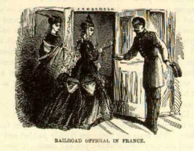

FranceWe have come five hundred miles by rail through the heart of France. What a bewitching land it is! What a garden! Surely the leagues of bright green lawns are swept and brushed and watered every day and their grasses trimmed by the barber. Surely the hedges are shaped and measured and their symmetry preserved by the most architectural of gardeners. Surely the long straight rows of stately poplars that divide the beautiful landscape like the squares of a checkerboard are set with line and plummet, and their uniform height determined with a spirit level. Surely the straight, smooth, pure white turnpikes are jack-planed and sandpapered every day. How else are these marvels of symmetry, cleanliness, and order attained? It is wonderful. There are no unsightly stone walls and never a fence of any kind. There is no dirt, no decay, no rubbish anywhere--nothing that even hints at untidiness--nothing that ever suggests neglect. All is orderly and beautiful--everything is charming to the eye. We had such glimpses of the Rhone gliding along between its grassy banks; of cosy cottages buried in flowers and shrubbery; of quaint old red-tiled villages with mossy medieval cathedrals looming out of their midst; of wooded hills with ivy-grown towers and turrets of feudal castles projecting above the foliage; such glimpses of Paradise, it seemed to us, such visions of fabled fairyland! We knew then what the poet meant when he sang of:
And it is a pleasant land. No word describes it so felicitously as that one. They say there is no word for "home" in the French language. Well, considering that they have the article itself in such an attractive aspect, they ought to manage to get along without the word. Let us not waste too much pity on "homeless" France. I have observed that Frenchmen abroad seldom wholly give up the idea of going back to France some time or other. I am not surprised at it now. |